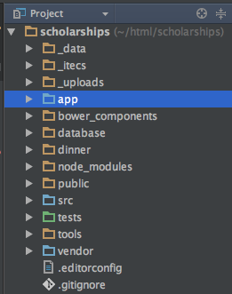

Pulling Up Your Legacy App by Its Bootstraps
by Emily Stamey
We are going to talk about Bootstrapping strategies for Legacy PHP applications. Although we did use
Twitter bootstrap in this project, I am not going to talk about it AT ALL. I wanted to be sure to let
you know upfront in case that affects your choice to be here.
Emily Stamey
Application Developer @ NC State University
Twitter: @elstamey
Blog: elstamey.com
- Hi, this is me. I'll share these links again at the end.
- My blog has some details about the implementation I'll be describing today.
Emily Stamey
Application Developer @ NC State University
Developing PHP applications since 1999
Primarily supporting legacy applications
My department supports about 80 applications that support business processes of the College of Engineering
I began using PHP in 1999. But most of the web applications I have worked on have
involved starting with someone else's work
My group in the College of Engineering manages a pile of PHP applications. Many of these were student-built and are useful to the person or people they were buit for, however they have only been worked on when they have a problem or a new need.
So now we have a pile of legacy that we must support.
Supporting Legacy is Hard
It's harder to read code than to write it. This is why code reuse is so hard.
- Joel Spolsky
Starting with someone else's code is challenging. Our tendency as developers is to replace it with a more familiar code, our own.
But many these legacy applications have grown beyond simple CRUD applications and now have a lot of business logic baked in.
It is important that we develop the skills to begin with someone else's code and fix only what is needed.
Why Bootstrapping is important
A lot of web development work involves supporting legacy applications
It is HARD to justify refactoring
Bootstrapping gives you flexibility to support your application
Let's review some terminology... (source: wikipedia)
A lot of our work involves supporting legacy applications. We can't convince managers to let us
refactor the code when it isn't broken. Learning to bootstrap the legacy codebase gives you options
beyond replacing the entire application using the latest strategies.
But before we begin, let's review some of these terms and make sure we're on the same page.
Legacy Software
Software developed using older technologies and practices. It can be difficult to replace because of its wide use.
Often a pejorative term, referencing a system as "legacy" often implies that the system is out of date or in need of replacement.
A legacy application was usually developed using older strategies. In the PHP world, this runs the gamut between
code that uses includes for functionality and styling of the page; and go all the way to modern frameworks that were
poorly implemented.
Spaghetti Code
The relationships between pieces of code are so tangled, it’s nearly impossible to add or change something without unpredictably breaking something.
Spaghetti code is what you would call the older functional PHP programming because the page styling and
functionality are intermingled. This also applies to code that doesn't meet the Single Responsibility principle.
Lasagna code
Lasagna code is code that has way too many layers.
In Object Oriented programming, this means code that has many really small classes when a few slightly larger classes would have done the trick.
I truly believe Lasagna Code was a term made to perpetuate the pasta metaphor, but it generally applies
to unbalanced code with classes that are either too large or too small.
A good lasagna has balanced layers.
Refactor
Technique for restructuring an existing body of code, altering its internal structure without changing its external behavior .
Refactoring is a term often misused. It means that you are changing the code without altering the aplication's behavior.
You can make your application more secure, improve a Database query, things like that without altering what the user sees
and does in the application.
Once you change behavior, you're no longer refactoring. This is why managers don't really support
refactoring. There is not a visible gain FOR THEM or the user. Charts and benchmarking may help this cause.
Technical Debt
A metaphor referring to the eventual consequences of any system design, software architecture or software development within a codebase.
When we develop many simple task apps in our group, we are building technical debt. We know that these tools
are useful to someone and we know we're choosing to ignore them for long periods of time because they aren't a squeaky wheel.
There is an instant gratification about building a tool that helps someone do their job well. That our dept can't get enough of.
But the developers know it will inevitably bite us. That simple CRUD app that one person uses will one day break and be an urgen fix.
The student who built it won't be here anymore. These are our adventures!
Unfortunately, this technical debt isn't purely on simple CRUD apps. We have many larger applications, as well. And those were student-built but have
grown too large to be student-maintained. And the users are too high on the org chart to let them die.
Bootstrapping
In software this usually means, building onto an existing system for the purpose of improvement with the least amount of sweat equity and development cost in the process.
Bootstrapping is a combination of refactoring and new features; it allows you to modernize your legacy application
without necessarily replacing the whole thing.
Why Bootstrapping is important
A lot of web development work involves supporting legacy applications
It is HARD to justify refactoring
Bootstrapping gives you flexibility to support your application
Now with the definitions fresh in our heads, this statement makes a lot more sense.
READ IT
The Project: Scholarships
I'm going to be telling you about a project I worked on for the College of Engineering
It is a scholarships tool. And when I was given this app to support three years ago, all code was changed in production.
The application was in use for most of the Academic year, so that meant I would have about a month at the end of the summer to
"FIX THE CODE", test it, and have it ready for the next Academic year. This month was a gift, they really
wanted me to do it in two weeks.
The application was an early version of Code Igniter. But that fact really doesn't mean much.
It was an MVC application implemented by a student who didn't really understand how to organize their code in MVC.
The Project: Scholarships
Engineering Foundation receives money from donors to give to students
Students apply each year giving information about themselves
Donors specify criteria/rules for students to receive money
Selection Committee selects Candidates to receive money
Scholarship Coordinator reports these Recipients to Financial Aid
Financial Aid awards the money
I want to tell you a bit about how Scholarships work. In the Fall, students began applying for the NEXT academic year.
In their application, students tell us things about themselves in order to be a better match for the aide
Donors tell the College who they want to receive the money, based on majors, gpa, and sometimes clubs
In the Spring, the selection committee finds out how much money there is to be given and they choose matching candidates to receive money.
A Scholarship Coordinator sends those candidates, the amount of money, and the term to Financial Aid to be given the following Fall and/or Spring.
Someone was using this tool at all times during the year. This made a tight support window.
It really needed to have the functionality separated into Bounded Contexts, so that the student application could be worksed on
when they weren't actively applying.
The problem was that almost all of the functionality was in one App model. It was not seperated by
Students, Foundation, or Selection
The code was spaghetti
We're going to talk about how my team bootstrapped this application by leaving the existing app in place and functioning
but adding new code in adjacent space and tying it into the CodeIgniter app
How to Bootstrap
Survey Your Application
Legacy projects have business value baked in, that you must preserve.
Organize the Work to be done
Based on the bugs, new features, etc. You have to balance needs vs. wants to deliver this product.
In order to bootstrap an application like this, you have to be well organized. You need to complete a full survery of users and functionality
And then you have to plan the work that's most necessary.
Survey Your Application
Talk to users of the application
Study the codebase
Examine the new feature requests
For your survey, you want to talk to the users, study the code, and since there are always new features, you want to
see how those might fit in. I recommend talking to the users first, because you will need to
look at the code again after you talk to them.
Talk to Users of the Application
Is their process consistent with the application?
What are the pain points?
Do they have concerns with the application?
Don’t rely on developer feedback
Talking to the previous developer does NOT count as talking to your users.
When you speak to the users of your application, you want to know about their process, and
does it match what they are doing in the application.
Identify any pain points they have in using the applciation
Finally, do they have concerns? Do they trust it? Hate it?
This is all necessary feedback.
Listening to your users here allows you to deliver REAL value, so pay attention!
User Feedback: Scholarship Process
Process was inconsistent with the application
We found that the application was inconsistent with their process
The existing scholarship application gave matching students a score on the Scholarship page. But there
was no way to select that student for an award. The Selection Committee received a spreadsheet
that said which scholarships had money, and how much was available to be awarded.
They used our tool to review the matching applicants and make their selections by
building a spreadsheet of the scholarship account number, student id number, amount and term they should receive the money.
User Feedback: Scholarship Pain Points
High Margin of Error
Their process was exiting and re-entering the system through spreadsheets
So they were in and out of the tool with spreadsheets filling the gaps.
This had a high margin of error. Manual entry of numbers.
It was tedious and painful
User Feedback: Scholarship Concerns
They didn’t trust that Selection Committee was choosing the best candidates
The Scoring algorithm was not clear/effective
Multiple majors weren't allowed by our system
NOT ALL MONEY WAS BEING AWARDED
MONEY LEFT UN-GIVEN ⇒ ANGRY DONORS
We also learned they didn't trust the application or that selection committee was choosing valid applicants
A student could be rejected by Financial Aid for lack of enrollment, not being in COE, low GPA etc.
The application wasn't able to predict those changes. So when FA rejected an award, it created mistrust.
And there was no guarantee that a student matched the criteria a donor specified. But that information can change
each semester.
Our scoring algorithm had a problem. Early on, they had decided they didn't want to exclude applicants, even if they didn't match required criteria.
But this meant that a student who matched 2 required and 1 optional criteria, had the same score as match against 3 required criteria.
A selection committee member had to scrutinize the candidates or choose a bad match.
Our application didn't allow for multiple majors, and this was becomming an issue because their non-engineering major was
often the major our application saw and made it difficult for them to match for engineering scholarships.
One of the biggest complications and a driving force for a project this large being moved to the top of the queue
was that there had been a lot of money either unarwarded or rejected, which made many donors angry.
The Dean got involved, and everyone understood the priority.
Survey Your Application
Talk to users of the application
Study the codebase
Examine the new feature requests
After you have spoken to your users, it's a great time to review the actual code
Study the codebase
This is where it makes sense to talk to other developers
You want to be sure it does what everyone think it does.
You want to identify entanglements whether they create places to avoid or room for improvement.
Codebase of Scholarship
Large App model
SQL queries, only slightly dynamic
Functions weren’t single-purpose
No Bounded Contexts between Students, Selection, and Foundation
This is where we really saw the danger in our large app model.
Functions with large SQL queries were being used in multiple places in the app
There were no boundaries between selection and foundation
Codebase of Scholarship
We also saw that Student's applications were a single row for each academic year. And their major was one column in that row.
At the time the student applied, their GPA, major, etc was saved to the application. And it wasn't uspdated
prior to selection This had been causing the students not to match for scholarships or to match when they should not have.
Survey Your Application
Talk to users of the application
Study the codebase
Examine the new feature requests
Finally, you're going to have a lot of work to do just to fix the legacy, but there are always new
features requested. And you have to see how those fit in.
Examine New Feature Requests
You want to see what those features are and how they might fit into the other work to be done.
New Features: Scholarships
Explicit criteria matching, excluded non-matching applicants
Current student data, query their GPA, Major, etc at time of selection
Students have multiple majors
For scholarships they wanted to exclude non-matching applications and to score them based on the optional criteria
They wanted student GPA and major to be relevant at the time they were selected, to get a better match
And they wanted students with multiple majors to be considered based on all of their engineering majors
How to Bootstrap
Survey Your Application
Legacy projects have business value baked in, that you must preserve.
Organize the Work to be done
Based on the bugs, new features, etc. You have to balance needs vs. wants to deliver this product.
This can be a lot of work to consider, and you have to be really organized in how you proceed.
Decision Time
Is there another application that can do what it does? Is it better?
Is this a worthwhile investment?
If so, what are the Most Valuable Features?
We had talked to a member of Financial Aide early on in this project because there was a tool for Universities
that did all the work our application did and more. But she was having trouble getting buy-in
for the largers colleges to switch and said that it was not going to happen.
Because of this, we decided we needed to improve the accuracy of our selections and reduce the number of rejected awards.
Build Trust with Users
Around the time you are deciding which features are more valuable, it's a good time to include userrs to
make sure that your decisions are consistent with their needs.
Be open about errors in the application because this helps them to support the changes. They want
the best candidates to be chosen, so they want you to fix the errors above all else.
Set Expectations
You need to keep open communication with your users, which is risky
They can add work from the side and ("just one more thing") and processes may change
But you need the open line of communication to get their feedback on changes and help with testing
It also makes it easier to find out about those process changes
Scope the work to be done
Bootstrapping, because are usually a lot of issues in a legacy application, can become a large project quickly
The larger the project, the more developers and users will need to be involved
And when that happens, it can be difficult to keep them engaged for the length of time required.
Creating smaller bites of work is ideal for getting people on board and familiar with the process.
How to Organize the work
Make sure when you organize the works into those logical, bite-size tasks, that you're keeping users
informed of what you're agreeing to work on and why. It can help with the feature creep.
Plan Features for Scholarships
Divided the application based on first need in the process
Student Application
Funding
Selection
Reports for Funding and Scholarship Coordinator
we didn't scope the work
Our plan with Scholarships was to put tasks in the order of the academic year, who would be accessing the system
The goal was to leave the existing application alone as much as possible.
We would develop new features adjacent to the framework and connect that into the framework's routing layer
We wanted to replace the application in pieces, but we didn't want to get stuck rebuilding all of the crud components.
Mitigate Risk
Before we could really get underway with development there were a lot of things we needed to do
to sure up our development process.
First of all, we were developing in production!
Control Risk Before Bootstrapping
Version control
Stabilize the code base and preserves history
Development and Staging environments (w/ Fake data)
No more developing in production!!!!
We needed to get the codebase into version control, first. Our department had just bought Github Enterprise,
so the only hurdle we had to overcome was finding all of the PII data that was hidden in small scripts and the code itself.
Next, we needed develpment environments that closely matched our production web servers. Staging space
was a fairly easy problem to resolve, we just created another vhost on the server. But the devlopment environment
required a vagrant box and puppet configuration, which one of my coworkers was able to put together and refine
This allowed us to develop changes and have fewer deployment issues than when we were developing using MAMP.
Test Everything You Need
We were building alongside an existing, untesting application. There were no "units", individual classeses
with behavior that we could test. But there was functionality we were expecting to keep working while we implemented
new features and restructured how Selection would work.
Testing was critical in this process! We began with a set of Acceptance tests that would allow us to verify that
the data displayed on the student application page remained unchanged. We changed the usability and user interface of the
application with minor tweaks around what was considered a complete application and questions asked
by some departments in the COE.
The new code we built had units, so We build unit and functional tests of those features using PHPUnit, which was incredibly powerful
working as a team. We could ensure that we didn't break each other's code if we continued running the full suite of tests before merging our pull requests.
Database Migrations: Phinx
$ vendor/bin/phinx create CreateUserLoginsTable
Another criticial tool for us was Phinx. This gave us the ability to alter our databases using a script.
Migrations give you the ability to do and undo these DB changes. Any change I made to my DB could
also be made across the team, and in staging or production environments. And if something unexpected happened, it could be undone.
It basically allowed us to version control DB changes. And although it isn't recommended, we did have to use it extensively for data migrations in
addition to schema changes.
<?php
use Phinx\Migration\AbstractMigration;
class CreateUserLoginsTable extends AbstractMigration
{
/**
* Example One: Change
*/
public function change()
{
// create the table
$table = $this->table('user_logins');
$table->addColumn('user_id', 'integer')
->addColumn('created', 'datetime')
->create();
}
/**
* Example Two: Up/Down with Migrate/Rollback
*/
public function up()
{
$table = $this->table('users');
$table->renameColumn('bio', 'biography');
}
/**
* Migrate Down.
*/
public function down()
{
$table = $this->table('users');
$table->renameColumn('biography', 'bio');
}
}
I've included two examples of a Phinx migration:
One is the change migration, which is a single function, and Phinx is supposed to know how to undo that change, so you don't have to write a down migration.
However, we had many changes that the change() method wasn't as reliable for us.
Example #2 is the type of migration we generally write. This example renames a DB column from bio to biography.
The down() method undoes this change, renaming the column bio again. There would probably be a code change to queries of the 'bio' data, and we would submit
those changes together with the migration, so the code was not in a broken state.
Database Migrations: Phinx
$ vendor/bin/phinx migrate
$ vendor/bin/phinx rollback
Configuration file
DB connections
Base URL
Set paths to twig templates
Customize Notice messages
Set config variables for services
<?php
return array(
'app' => array(
'base_url' => sprintf('http://localhost:%s/', isset($_SERVER['SERVER_PORT']) ? $_SERVER['SERVER_PORT'] : ''),
'index_page' => 'index.php/',
'debug' => FALSE
),
'db' => array(
'default' => array(
'hostname' => "local__server",
'port' => "3306",
'username' => "uname",
'password' => "pword",
'database' => "db_name_"
)
),
'twig' => array(
'template_path' => array(
__DIR__ . '/templates',
__DIR__ . '/templates/dashboard',
)
),
'authorization' => array(
'funding' => array('elstamey', 'person2'),
'developers' => array('elstamey'),
'coordinators' => array('person3')
),
'notice' => array(
'enabled' => false,
'type' => 'info',
'headline' => null,
'message' => null,
'syslink' => null
),
'errorHandling' => array(
'emailExceptions' => false
),
'awardLetters' => array(
'letterhead' => '_itecs/notification-samples/ncsu_coe_aa_letterhead.pdf',
'academicYears' => '2015-2016',
'respondByDate' => 'May 11, 2015',
'templates' => array(
'awardLetter' => 'layouts/letters/award-letter.twig',
'awardEmail' => 'layouts/letters/award-email-body.twig'
),
'fixedAttachments' => array(
'_itecs/notification-samples/thank_you_template.pdf'
),
'signatureImagePath' => '_uploads/tmp/deans_signature.png',
'outputPath' => '_uploads/awardLetters/'
),
'emailService' => array(
'sendLimit' => 5,
'retries' => 3,
'throttleTime' => 2, // seconds
'fromAddress' => 'Scholarships Application <engr-webmaster@ncsu.edu>',
'replyToAddress'=>'College of Engineering <engineering@ncsu.edu>'
)
);
?>
Bootstrapping Scholarships: Filetree
new code in /src alongside the /app directory

Bootstrapping Scholarships: Composer
Composer packages
Phinx for database migrations
Illuminate database
Twig templates
Testing packages (Codeception, PHPUnit, Mockery)
Moneyphp for handling currency
Pimple containers
Bootstrapping Scholarships: Connecting the Dots
/app/bindings.php
define containers for each of the new Services, Repositories, Projections
/app/controllers
/app/services.php
defined and configured twig, database, et al
Containers
/app/bindings.php
<?php
use /Scholarships/Selection/Infrastructure/Storage/HybridSourcedScholarshipRepository;
$container['/Scholarships/Selection/Domain/Scholarship/ScholarshipRepository'] = function($c) {
return new HybridSourcedScholarshipRepository(
$c['ScholarshipsSupportEventsEventStore'],
$c['database'],
$c['ScholarshipsCommonServicesDepartmentsService'],
$c['ScholarshipsCommonServicesResidenciesService'],
$c['ScholarshipsCommonServicesAcademicPlansService'],
$c['Scholarships/Selection/Domain/CollaborationsService']
); };
Controllers
class Selectionnext extends BaseController
{
public function Selectionnext()
{
parent::BaseController();
$this->scholarshipRepository = $this->container['Scholarships/Selection/Domain/Scholarship/ScholarshipRepository'];
}
protected function scholarshipsDashboard($scholarshipId)
{
$committeeMember = $this->getCommitteeMember();
$scholDetails = $this->getScholarshipDashboard($scholarshipId);
$this->render('pages/scholarship-details.twig', array("scholarship" => $scholDetails)));
}
private function getScholarshipDashboard($scholarshipId,$keepItLight=false)
{
$committeeMember = $this->getCommitteeMember();
$presenter = new ScholarshipDashboardPresenter(
$committeeMember,
ScholarshipId::fromString($scholarshipId),
$this->events,
$this->scholarshipRepository,
$this->container['Scholarships/Selection/Domain/ApplicantQueryService']
);
$scholDetails = $presenter->asArrayForJson();
$scholDetails['json_string'] = json_encode($scholDetails);
return $scholDetails;
}
?>
Bootstrap the application
Within CodeIgniter
New Controllers for new functionality
Bindings for CodeIgniter to find the new code
New Twig templates beside the existing Views in /app
Summary: Scholarship Wins!
Restored confidence in selection process!
Fewer awards were rejected!
More Scholarship Money was awarded than ever before!
By May 2015: Approximately $1,074,394 Awarded for 2015-16
Summary: Lessons Learned
Huge time investment (approx. 9 months to complete selection) With more work over the summer to complete
Over time we lost participation because we have too many other projects needing attention
Tight deadlines with un-scoped work, we created technical debt that we would have to address in the next academic year
Summary: Was It Worth It?
University is replacing it this year
We learned a lot of new techniques
bootstrap
event sourcing
Domain-Driven Design
Command Query Response Segregation
managing projects
A LOT!
QUESTIONS?
Emily Stamey
Application Developer @ NC State University
Twitter: @elstamey
Blog with Bootstrapping details: elstamey.com